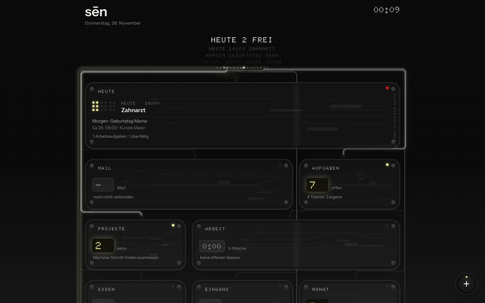
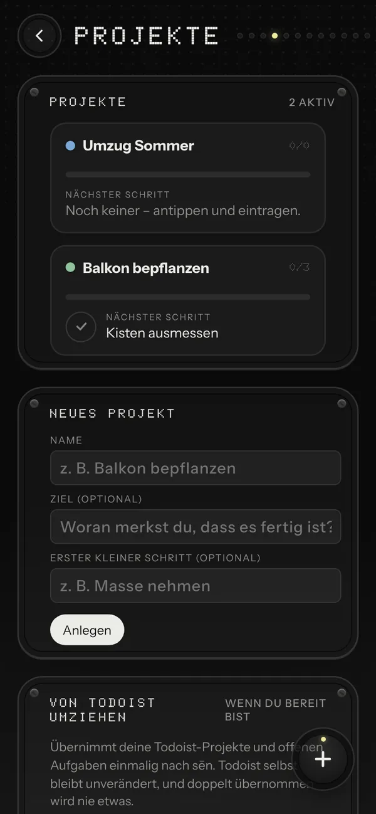

mach mit.
Die Beta läuft zurzeit auf dem Mac. Trag dich ein – du bekommst deinen Zugang persönlich per Mail, sobald ein Platz frei ist.
Mit Windows, iPad oder Handy? Trag dich trotzdem ein. Wir melden uns, sobald sēn bei dir läuft.
dein kopf ist kein speicher.
sēn sammelt Post, Rechnungen, Termine, Aufgaben und Projekte an einem ruhigen Ort – und zeigt dir nur, was gerade zählt. Gebaut für Köpfe, die anders denken. Und für alle, denen zwanzig Apps zu viel sind.
Jeder Bereich ist ein Modul auf einer ruhigen Platine. Du entscheidest, welche auf deinem Startbildschirm leben – und tippst hinein, wenn du so weit bist.


Auf dem Computer, dem iPad und dem Handy gleich – tags hell, nachts dunkel.
Projekte zeigen nur den nächsten kleinen Schritt. Der Rest wartet.
Die Beta läuft zurzeit auf dem Mac. Trag dich ein – du bekommst deinen Zugang persönlich per Mail, sobald ein Platz frei ist.
Mit Windows, iPad oder Handy? Trag dich trotzdem ein. Wir melden uns, sobald sēn bei dir läuft.
Du hörst schon bald Neues von uns.